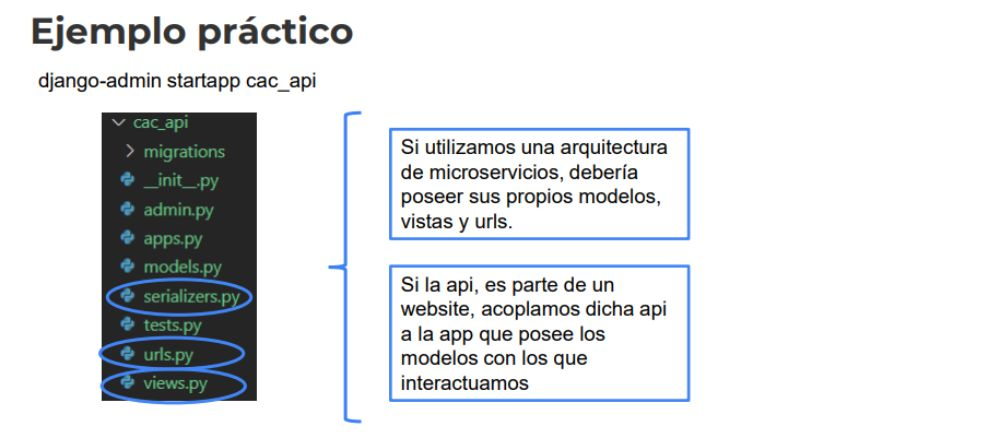

19 - Django: Rest Framework (Clase 31)
1. Recordemos
2. REST API MODEL
Para generar una Api dentro del sitio..
No orientado a microservicios.
Nuestra Api le brinda información a otro sistema.
Con una aplicación de Django, podemos proveer un servicio.
Con este tipo de modelo.. Tenemos un PUNTO DE ENTRADA.. El cual se comunicará con el servidor.
Es el endpoint, la api está dentro del server.
No es una arquitectura, es una manera de modelar una Api.
También están las SOAP, son "Metodologías"..
¿Para que se piensa?
Es un punto donde se recibe un solocitud un request, y emitimos una respuesta, un response.
Lo que recibe el cliente:
- json -> Más independiente de la tecnlogía.
- xml
- html
Es una manera de pensar una arquitectura, empleando Rest Api, para permitir servicios, antes eran Soap.
3. Modelos combinados
La página está creada en HTML y..
La api la proveemos para un sitio externo, que puede ser un celular, un banco, etc..
- De esta manera permitimos a través del framework para comunicar con otros servicios.
- Podría existir o no.
En la página, proveemos un endpoint para mostrar a los estudiantes.
- Por medio de la api se puede hacer un post, un get, etc.. Dependerá de la lógica de negocio.
4. Instalación
djangorestframework -> Con el pip en el entorno..
La debemos agregar en las app instaladas.
Y debemos agregar las urls que deseemos manejar..
- Por defecto, crea una api para autenticar.. Responde con el user.
- Además crea la parte visual.
* Autenticación con Token es lo más utilizado.. Lo anterior no tanto.
5. Serialización
 Transformar un objeto, en un string (Texto), algo serializable..
Que puede ser transportado a través de HTTP..
Serializar: Agarramos el objeto lo pasamos a un string
Desserializamos: Agarramos el String y lo pasamos a un objeto.
¿Que objeto? Dependerá de la tecnlogía..
Server, objetos de python, de django, modelos.. Todo esto lo transforma y lo envía al cliente.
Transformar un objeto, en un string (Texto), algo serializable..
Que puede ser transportado a través de HTTP..
Serializar: Agarramos el objeto lo pasamos a un string
Desserializamos: Agarramos el String y lo pasamos a un objeto.
¿Que objeto? Dependerá de la tecnlogía..
Server, objetos de python, de django, modelos.. Todo esto lo transforma y lo envía al cliente.
6. Ejemplo práctico

--- Ejemplo
No usaremos microservicios..
De esta manera no individualizamos sino más bien acoplamos la Api al website.
Generamos la app de django..
- django-admin startapp cac_api
- serializer ->
- urls.py -> Punto de entrada a nuestra Api.
- views.py -> Funciones que reciben la llamada de la URL.
7. Serializers.py
- Que hace? Transforma el objeto a un string o al revés.
Ya viene todo armado.. De esta manera asociamos el modelo con el ModelSerializer
En este ejemplo vemos asociado el modelo con la api.. O sea, ese acoplamiento y no usando la estructura de microservicios.
8. Views.py (ViewSets)
Usamos las vistas que provee el framwork.. Vistas basadas en calse, VBC
EstudianteMViewSer -> Nombre elegido arbitrariamente con relación al modelo.
El queryset lo manejamos a través del manager.. objects.
nos traemos el serializer.EstudianteMSerializer
permission_classes -> Si la vista tiene o no seguridad..
En el ejemplo exigimos la autenticación y que sea read only
* De esta manera generamos las vistas para obtener lo que sea necesario de acuerdo a los estudiantes..
Obtenerlos todos, algunos, uno solo y etc..
9. Urls.py (Routers)
Ahora con las vistas creadas.. Registradas a través de la vista basada en Clase ModelViewSet..
Procedemos armar las urls..
con el router.. Genera todo de manera automática..
- Es decir vistas asociadas a urls.. de listar, grabar uno, actualizar uno, etc.
--- Ejemplo Práctico
Generamos nuestra app_api..
--- serializers.py
from rest_framework import serializers
from cac.models import EstudianteM -> Importamos desde el modelo del cac
class EstudianteMSerializer(serializers.ModelSerializer): -> Hereda del framework
class Meta:
model = EstudianteM -> Asociado al EstudianteM
fields = ['id', 'nombre_m', 'apellido_m', 'email_m', 'dni_m', 'matricula_m'] * El modelo es que tenemos en nuestro proyecto general.
*
--- urls.py
from django.urls import path, include
from rest_framework.routers import DefaultRouter
from cac_api import views
router = DefaultRouter()
router.register(r'estudiantes', views.EstudianteMViewSet, basename='estudiante') -> De manera automática nos traemos todas
urlpatterns = [ * O bien, especificando las url de manera manual..
path('', include(router.urls)), -> Agregamos las urls de manera automática
path('api-auth', include('rest_framework.urls', namespace='rest_framework')) -> Genera la capa de autenticación automática
]
--- views.py
from rest_framework import viewsets
from rest_framework import permissions
from cac.models import EstudianteM
from cac_api import serializers
# Create your views here.
class EstudianteMViewSet(viewsets.ModelViewSet):
queryset = EstudianteM.objects.all().order_by('id') -> Acá podemos hacer los filtros y los cambios necesarios en la info que traemos.
serializer_class = serializers.EstudianteMSerializer
permission_classes = [permissions.IsAuthenticatedOrReadOnly]
--- Ahora en el pig_22820/urls.py
from django.contrib import admin
from django.urls import path
from django.urls.conf import include
from cac.admin import mi_admin
from cac_api import urls as api_urls -> Lo nombramos como api_urls
urlpatterns = [
path('cac_api/', include(api_urls)), -> Linkeamos la api
path('cacadmin/', mi_admin.urls),
path('admin/', admin.site.urls),
path('', include('cac.urls'))
]
10. Ejemplo práctico (interfaz automática)
localhost:8000/cac_api/ -> Nos genera el endpoin de nuestra base de datos.
- Ahora si apuntamos con el postman a esa url.. Aplicamos los verbos HTTPS
Para hacer un post, es necesario hacer la autenticación.. De lo contrario solo usamos el get.
localhost:8000/cac_api/ -> Si vamos al login,
- Ponemos el usuario y la contraseña.. Iniciamos y podemos entrar con el Post.
- Si fuese necesario.. Podemos hacer el put a través del id de los elementos.. También el Delete.
* De esta manera nos provee toda una interfaz gráfica..
-----------------------
Si quisieramos hacerlo desde el frontend.. Podemos hacer un fetch usando js..
-- Por ejemplo
const divProyectos = document.querySelector("#divProyectos");
fetch('/api_proyectos') -> Le armamos
.then((response) => response.json())
.then((data) => {
console.log(data);
let proyectos = data.data;
proyectos.forEach(proyecto => {
let html = renderProyecto(proyecto);
divProyectos.insertAdjacentHTML('beforeend', html);
});
});
-----------------------
Usar un plugins o el framework view para que desde la vista.. Podemos consumir la api.
O bien el propio Django..
import requests
respuesta = requests.get("https://api") -> La requests la podemos manejar a gusto.. Que mostrar y demás.
* Esto se hace en la views.py, el tiempo de respuesta puede variar y el servidor se puede caer.
* AWS es gratis, pero c
De esta manera con un serializer para mostrar la información de acuerdo a lo necesario.
También hay que considerar el asincronismo al momento de manejar las Apis.. Hacer el await y demás.
-----------------------
11. Despliegue
Django: Despliegue en servidor
● Tipos de infraestructuras (IaaS, PaaS, SaaS)
● Load Balancer
● Python Anywhere
● Heroku
● Amazon EC2
● Docker
Python Anywhere -> Debemos crear usuario y demás.
render.com
----------------------- Infreastructuras
- ¿Donde guardar los archivos?
- ¿Hacer o no backup de los archivos?
- ¿Tener un servicio de git?
- ¿Si va estar todo en el mismo servidor? ¿O aparte? ¿Como se van a conectar?
- ¿Si tendremos servidores comunicados como respaldo o queda offline nuestra página?
- Infrasestructura = Dinero
SAAS -> Software como servicios. Utilizamos el Software. Menos control
PAAS -> Plataforma como servicios. Como Heroku.
IAAS -> Infrasestructura como servicios. Aws, azure, google compute engine. Armamos la estructura.
* Es mayor el control que podemos usar, tenemos que armar una maquina virtual, colocarle un sistema operativo, conectarlo con la base de datos.
* Pensar la seguridad y demás, o sea, muchos más conocimientos.
----------------------- PAAS
Heroku
PythonAnywhere -> Tiene una capa gratuita.
* Dejo de proveer postgresssql de manera gratuita, solo mysql.
----------------------- Elastik VeanStalk - EC2(Server), RDS(DB), Files(S3)
- Para armar un servidor de Django.
EC2 -> Maquina virtual, para django es mejor linux.
* Tener replicas.
- Arriba una capa, el Load Balancer una maquina, que va equilibrando los request.. Balanceando las Cargas.
- De esta manera tendremos un response más rápido.
S3 -> Servicio de guardado de archivos estáticos.
Storage Service, se guarda en otro server
RDS -> Relation Database, donde guardamos la base de datos.
Hay capas gratuitas en cada servicio.. FREE TRIAL
Estan pre definidas..
----------------------- ¿Que es DOcker?
Es un software, que maneja contenedores.
Es una maquina virtual ejecutable dentro de otro sistema operativo.
Plataformas -> Kubernetes.
Hace lo que tendríamos hacer en un sistema operativo.
- Asignar memoria.
- Configurar puertos. -> Son sentencias que luego corren en otros sistemas.
- Conectar a la base de datos
Docker es el intermediario.. Y con las sentencias es el plan de acción, para ejecutar todo.
Maquina virtual ejecutable adentro de cualquier sistema operativo que posea docker
-----------------------
Pythonanywhere + Github
Más sencillo para hacer el despliegue de manera automática.
Creamos el Api Token.. Deja activo la instancia para luego utilizarla.
Databases, creamos la instancia de base de datos.